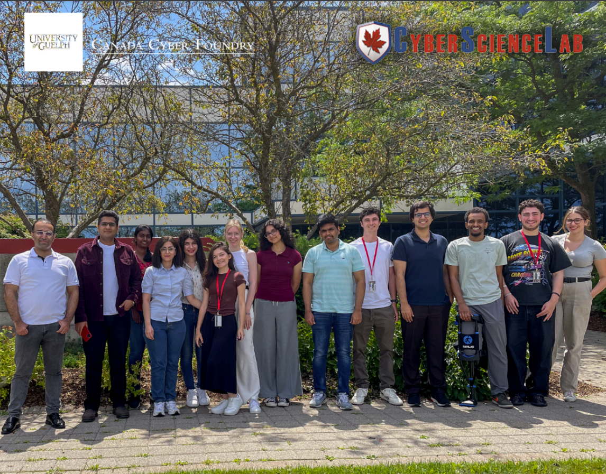

Introduction
For my third co-op work term, I had the opportunity to join the Cyber Science Lab (CSL) during the summer of 2024. Throughout the term, I primarily contributed to two major projects: AI SOAR and Cybersecurity RAG (Retrieval Augmented Generation). Overall, I had a great experience working on these projects with a great team.
Information About The Employer
The Cyber Science Lab (CSL) is a not-for-profit research facility dedicated to advancing the fields of cybersecurity, digital forensics, threat hunting, and AI-driven security solutions. Through its innovative projects, CSL aims to push the boundaries of knowledge and best practices in the cyber world.
Learning Goals
1) Improve my research abilities
Initially, my role at the Cyber Science Lab was focused on research. To enhance my research skills and make my findings more useful for both myself and my coworkers, I implemented a consistent documentation process. This approach provided a structured format that keeps my information well-organized. As a result I was able to quickly locate and retrieve documented information, significantly improving the speed and efficiency with which I could access the data I needed. This improved organization not only benefited my own research but also made it easier for my coworkers to utilize the information I compiled.
2) Learn how to use cyber security tools
To achieve my goal of learning how to use cybersecurity tools, I focused on gaining hands-on experience with these tools to understand their capabilities and applications. During my position, I worked extensively with Shuffler.io which integrates commonly used cybersecurity tools like VirusTotal and Yara. I developed automated cyber workflows for various scenarios using these tools which provided me with practical experience in applying them. This real-world application allowed me to see how these tools can benefit cybersecurity in different contexts and ultimately helped me achieve my goal.
3) Acquire knowledge of new software technologies
My goal was to acquire knowledge of new software development technologies by taking on new projects projects that utilized tools I had never worked with before. Success was measured by how well the projects progressed and my personal evaluation of my abilities with these new technologies. Over the course of my term I got the chance to work with technologies like Go, OpenSearch, and various tools related to LLMs, such as Hugging Face and Langchain. While there were challenges along the way, by the end of my term I had developed a solid understanding of these new tools and believe I achieved my goal.
My Role At The Company
- Developed and implemented backend endpoints using Go to enhance the cybersecurity analyst platform
- Designed and integrated a gateway routing system for Large Language Models (LLMs), enabling advanced request processing and monitoring
- Built a Retrieval-Augmented Generation (RAG) model leveraging Meta's Llama3, delivering accurate exploit information and reducing LLM hallucinations during penetration testing
- Automated cybersecurity workflows by integrating tools like Yara and VirusTotal, improving threat detection, malware analysis, and response capabilities
- Conducted in-depth research on AI and cybersecurity topics to support project development and innovation
Conclusion
As my 4-month co-op term at the Cyber Science Lab comes to an end, I’ve had a really great experience. Before this, I hadn’t worked much with AI or cybersecurity, so it was a whole new area for me. Working on these projects has helped me grow a lot as a developer and collaborator, and I’m grateful for the chance to learn from such a great team.
List of Technologies Used
Improved Technologies
- Python
- JavaScript
- Docker
- Shell Scripts
New Technologies
- Go
- OpenSearch
- Large Langauge Models (LLM)
- Vue.js